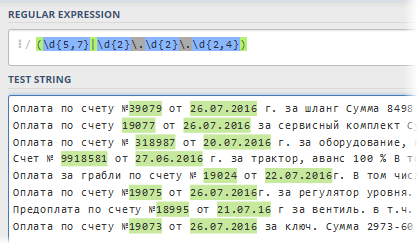

Анализ текста регулярными выражениями (RegExp) в Excel
Одной из самых трудоемких и неприятных задач при работе с текстом в Excel является парсинг - разбор буквенно-цифровой "каши" на составляющие и извлечение из нее нужных нам фрагментов. Например:
Обычно во подобных случаях, после получасового муторного ковыряния в тексте вручную, в голову начинают приходить мысли как-то автоматизировать этот процесс (особенно если данных много). Решений тут несколько и с разной степенью сложности-эффективности:
Кроме вышеперечисленного, есть еще один подход, очень известный в узких кругах профессиональных программистов, веб-разработчиков и прочих технарей - это регулярные выражения (Regular Expressions = RegExp = "регэкспы" = "регулярки"). Упрощенно говоря, RegExp - это язык, где с помощью специальных символов и правил производится поиск нужных подстрок в тексте, их извлечение или замена на другой текст. Регулярные выражения - это очень мощный и красивый инструмент, на порядок превосходящий по возможностям все остальные способы работы с текстом. Многие языки программирования (C#, PHP, Perl, JavaScript...) и текстовые редакторы (Word, Notepad++...) поддерживают регулярные выражения.
Microsoft Excel, к сожалению, не имеет поддержки RegExp по-умолчанию "из коробки", но это легко исправить с помощью VBA. Откройте редактор Visual Basic с вкладки Разработчик (Developer) или сочетанием клавиш Alt+F11. Затем вставьте новый модуль через меню Insert - Module и скопируйте туда текст вот такой макрофункции:
Public Function RegExpExtract(Text As String, Pattern As String, Optional Item As Integer = 1) As String
Set regex = CreateObject("VBScript.RegExp")
Set matches = regex.Execute(Text)
RegExpExtract = matches.Item(Item - 1)
RegExpExtract = CVErr(xlErrValue)
Теперь можно закрыть редактор Visual Basic и, вернувшись в Excel, опробовать нашу новую функцию. Синтаксис у нее следующий:
=RegExpExtract( Txt ; Pattern ; Item )
где
Самое интересное тут, конечно, это Pattern - строка-шаблон из спецсимволов "на языке" RegExp, которая и задает, что именно и где мы хотим найти. Вот самые основные из них - для начала:
|
Паттерн |
Описание |
|
. |
Самое простое - это точка. Она обозначает любой символ в шаблоне на указанной позиции. |
|
\s |
Любой символ, выглядящий как пробел (пробел, табуляция или перенос строки). |
|
\S |
Анти-вариант предыдущего шаблона, т.е. любой НЕпробельный символ. |
|
\d |
Любая цифра |
|
\D |
Анти-вариант предыдущего, т.е. любая НЕ цифра |
|
\w |
Любой символ латиницы (A-Z), цифра или знак подчеркивания |
|
\W |
Анти-вариант предыдущего, т.е. не латиница, не цифра и не подчеркивание. |
|
[символы] |
В квадратных скобках можно указать один или несколько символов, разрешенных на указанной позиции в тексте. Например ст[уо]л будет соответствовать любому из слов: стол или стул. |
|
[^символы] |
Если после открывающей квадратной скобки добавить символ "крышки" ^, то набор приобретет обратный смысл - на указанной позиции в тексте будут разрешены все символы, кроме перечисленных. Так, шаблон [^ЖМ]уть найдет Путь или Суть или Забудь, но не Жуть или Муть, например. |
|
| |
Логический оператор ИЛИ (OR) для проверки по любому из указанных критериев. Например (счет|счёт|invoice) будет искать в тексте любое из указанных слов. Обычно набор вариантов заключается в скобки. |
|
^ |
Начало строки |
|
$ |
Конец строки |
|
\b |
Край слова |
Если мы ищем определенное количество символов, например, шестизначный почтовый индекс или все трехбуквенные коды товаров, то на помощь нам приходят квантификаторы или кванторы - специальные выражения, задающие количество искомых знаков. Квантификаторы применяются к тому символу, что стоит перед ним:
|
Квантор |
Описание |
|
? |
Ноль или одно вхождение. Например .? будет означать один любой символ или его отсутствие. |
|
+ |
Одно или более вхождений. Например \d+ означает любое количество цифр (т.е. любое число от 0 до бесконечности). |
|
* |
Ноль или более вхождений, т.е. любое количество. Так \s* означает любое количество пробелов или их отсутствие. |
|
{число} или |
Если нужно задать строго определенное количество вхождений, то оно задается в фигурных скобках. Например \d{6} означает строго шесть цифр, а шаблон \s{2,5} - от двух до пяти пробелов |
Теперь давайте перейдем к самому интересному - разбору применения созданной функции и того, что узнали о паттернах на практических примерах из жизни.